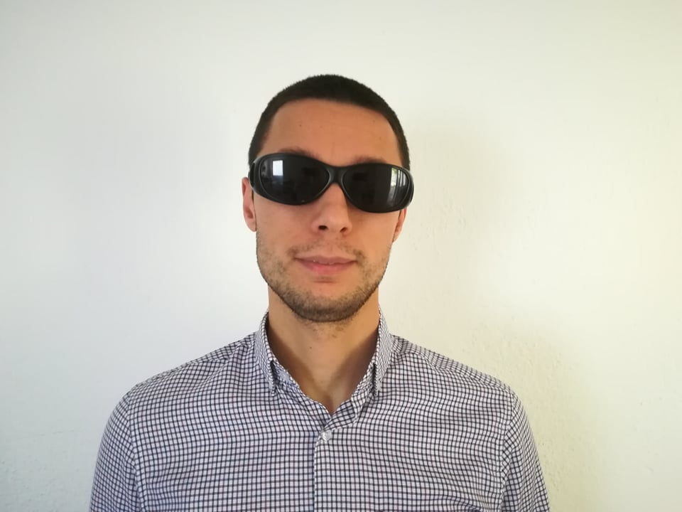

Kristijan Lazarev – Accessibility – Proofreading – Project Management!
Welcome buddy!
Are you looking for:
- App, web, or document accessibility testing and remediation?
- Consultation on assistive technology/accessibility, and training on various disability-related topics?
- Translation of website/mobile app interfaces to Macedonian, proofreading Macedonian content, or content creation?
Look no further for comprehensive accessibility solutions, training, and linguistic services!
Certified, licensed, and with 5+ years of experience to do just that for you!
Who am I?
I am a certified accessibility specialist, an independent researcher, certified proofreader in Macedonian language, advocate for disability rights and a humanist who loves using his problem-solving skills to make others' life easier!
Read more about my professional and educational journey here!
Publications and media
Throughout the years, I have been an author and co-author of numerous academic papers and publications for the general public, as well as an author of articles, columns, participant in various discussions, media appearances, and interviews.
All my publications and media appearances are archived and linked in one place.
Why me?
- Because I am a visually impaired individual for whom assistive technology is an integral part of life, used over 12 hours a day.
- Because I understand people with disabilities from personal and long-term experience, not just professionally.
- Certified screen reader user (NVDA) and IAAP Certified Professional in Accessibility Core Competencies (CPACC).
- Member and national contact for North Macedonia in AAATE.
- Degree in Macedonian Language & Literature from Blaze Koneski Faculty in Skopje with a maximum GPA.
- Master’s student in Project Management at FEIT Skopje.
- Determined, persistent, dedicated, and passionate in all I do.
Contact Me!
I believe we can make the world a better place together. So connect with me and let's begin!
In the meantime:
- Visit my LinkedIn Profile
- Check out my ResearchGate Profile
- Read my articles on The National Union of the Blind of North Macedonia and
- Check the Association for Accessibility and Inclusion's website the only accessibility related association in North Macedonia.